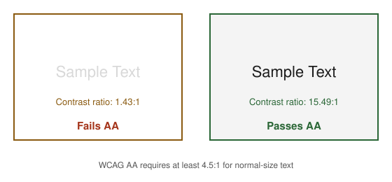

Web Accessibility
|
This page documents general web accessibility concepts as defined by the W3C Web Content Accessibility Guidelines (WCAG). Unlike the other reference sections on this site, no single reference book underpins it: the content was generated with the assistance of AI from general knowledge, and should be verified against the W3C’s own WCAG documentation before relying on it in production. The Legal Standards and Regulations section in particular summarizes accessibility regulations in different countries/regions for general informational purposes only — it is not legal advice, and must be checked against each jurisdiction’s own current official text before being relied on for compliance purposes. |
Web accessibility means building pages that people with visual, auditory, motor, or cognitive disabilities can perceive, understand, navigate, and interact with — whether they browse directly or through assistive technology such as a screen reader, a switch device, or voice control. It matters both because it is often a legal requirement (see Legal Standards and Regulations) and because accessible markup tends to be more robust markup in general: semantic HTML, sufficient contrast, and full keyboard operability benefit every user, not only those relying on assistive technology.
The W3C and the WCAG 2 Standard
The World Wide Web Consortium (W3C) is the international standards organization for the web, founded in 1994 by Tim Berners-Lee. It develops open, vendor-neutral technical standards — HTML, CSS, and accessibility guidelines among them — through a consensus process among member organizations, browser vendors, and invited experts, and publishes a finished, ratified standard as a W3C Recommendation. Web accessibility specifically is the responsibility of the Web Accessibility Initiative (WAI), a dedicated W3C effort that produces the Web Content Accessibility Guidelines (WCAG) — the standard that every other section on this page (the POUR principles, the A/AA/AAA conformance levels, and most of the Legal Standards and Regulations below) is built directly on.
WCAG 2 is not a single fixed document but a backward-compatible family of releases: WCAG 2.0 (2008), WCAG 2.1 (2018), and WCAG 2.2 (2023), each adding new success criteria on top of the previous version rather than replacing it — content conforming to WCAG 2.2 also conforms to WCAG 2.1 and WCAG 2.0. In practice, "WCAG compliance" today almost always means WCAG 2.1 or 2.2 at Level AA, since that is what most of the legal standards below anchor their requirements to. The current version is published at W3C — Web Content Accessibility Guidelines (WCAG) 2.2, with an overview and version history at W3C WAI — WCAG Overview. (A separate, older WCAG 1.0, published in 1999, predates the POUR structure and the version-2 numbering used throughout this page; it is superseded and mentioned here only because some legacy tools and standards, such as HERA below, were built against it rather than WCAG 2.)
Core Principles: POUR
The W3C’s WCAG organizes every success criterion under four foundational principles, commonly abbreviated POUR: content must be Perceivable, Operable, Understandable, and Robust. A page that satisfies all four is accessible to the widest range of users and assistive technologies; failing any one of them creates a barrier for some group of users, regardless of how well the other three are handled.
-
Perceivable — information and UI components must be presentable to users in ways they can perceive: text alternatives for non-text content, and sufficient contrast between text and its background.
-
Operable — UI components and navigation must be operable: full keyboard support (see Building an Accessible Page), and no interaction that traps a user’s focus or requires precise timing they can’t control.
-
Understandable — information and UI operation must be understandable: consistent navigation across pages, and error messages that clearly state what went wrong and how to fix it.
-
Robust — content must be robust enough to be interpreted reliably by a wide variety of user agents, including assistive technology: valid, semantic markup that exposes the right roles, states, and names.
Building an Accessible Page
A practical checklist covering the most common, highest-impact accessibility requirements:
-
Color contrast — WCAG AA requires a contrast ratio of at least 4.5:1 for normal text, and at least 3:1 for large text (18pt+, or 14pt+ bold) and UI components/graphical objects. The figure below shows a failing pair next to a passing one:

-
Text size — size text with relative units (
rem,em,%) rather than fixed pixel values, so a user’s browser zoom or text-size preference actually resizes the text instead of being resisted or overridden by a fixed layout. -
Alternative text for images — a meaningful image (one that conveys information or acts as a control) needs a descriptive
altattribute; a purely decorative image should usealt=""so screen readers skip it entirely instead of announcing a filename or redundant description. -
Screen-reader support — semantic HTML5 elements (
<nav>,<main>,<header>,<button>) and ARIA landmarks convey page structure to a screen reader without any extra visual change. See Bootstrap Accessibility for the ARIA state Bootstrap’s own components manage automatically (aria-expanded,aria-hidden,aria-modal, and friends) rather than repeating that detail here. -
Keyboard/tab support for forms — every interactive element must be reachable and operable from the keyboard alone, in a sensible tab order, with a visible focus indicator. See Forms: Accessibility and Validation's own "Keyboard navigation and focus" section for the specifics, rather than duplicating them here.
WCAG Conformance Levels: A, AA, AAA
WCAG success criteria are grouped into three increasingly strict conformance levels. A page conforms to a given level only if it satisfies every success criterion at that level and below.
| Level | What it requires / example criteria |
|---|---|
A |
The minimum level — baseline accessibility. Example criteria: text alternatives for all non-text content
( |
AA |
The level most legal standards mandate (see Legal Standards and Regulations). Example criteria: 4.5:1 color contrast for normal text (3:1 for large text), text resizable up to 200% without loss of content or functionality, consistent navigation and identification across a set of pages. |
AAA |
The highest, most stringent level. Example criteria: 7:1 color contrast for normal text, sign language interpretation for prerecorded audio content, context-sensitive help available on every page. WCAG itself recommends against AAA as a blanket site-wide target — some AAA criteria are not achievable for all types of content, so it is generally applied selectively rather than site-wide. |
Legal Standards and Regulations
Accessibility requirements are codified into law or formal standards in most jurisdictions. The three most relevant to this site’s audience:
Spain: UNE 139803
UNE 139803:2004, published by AENOR (Spain’s national standards body), was the original Spanish web-accessibility standard, based on WCAG 1.0. It was superseded by UNE 139803:2012, which realigned the standard to WCAG 2.0 — replacing the older WCAG 1.0-based checkpoints with WCAG 2.0’s success criteria and conformance levels, and adding coverage for content types WCAG 1.0 did not address (e.g. richer scripting and dynamic content). Both versions are summarized, with the current standard available for free download, on the Spanish government’s own accessibility-normativa portal: PAe — Legislación nacional de accesibilidad.
Europe: CWA 15554:2006
CWA 15554:2006 ("Specifications for a Web Accessibility Conformity Assessment Scheme and a Web Accessibility Quality Mark") is a CEN Workshop Agreement — a lighter-weight, faster-to-produce consensus document than a full European Standard — drawn up to harmonize how conformity to the W3C’s WCAG is assessed and certified for public-sector web content across EU member states. It proposed a common conformity-assessment scheme and a "Web Accessibility Quality Mark" rather than defining new accessibility criteria of its own. CWA 15554 predates, and was later effectively superseded in EU policy by, EN 301 549 (the harmonized European standard on ICT accessibility requirements, itself built on WCAG). Background and the workshop-agreement process are documented by CEN-CENELEC’s own workshop-agreement program: CEN-CENELEC CWA download area.
USA: Section 508
Section 508 of the Rehabilitation Act of 1973 (as amended in 1998) requires U.S. federal agencies to make their electronic and information technology accessible to people with disabilities — covering websites, software, electronic documents, and information kiosks. Its 2017 refresh ("Section 508 Refresh") replaced the older, more technology-specific 508 standards with a requirement to conform to WCAG 2.0 Level AA, incorporated directly by reference, aligning U.S. federal accessibility requirements with the same WCAG conformance levels covered in WCAG Conformance Levels: A, AA, AAA. The authoritative reference is the U.S. government’s own site: Section508.gov — Section 508 of the Rehabilitation Act, as amended.
Validation Tools
Automated tools help catch a meaningful subset of accessibility problems quickly, though (see Automated Checks Are Not Enough) they never replace manual review entirely.
TAW
TAW (tawdis.net) is an automated WCAG conformance checker, widely used in Spanish-speaking countries and referenced by several official Spanish accessibility-normativa resources. To use it: enter the URL of the page to analyze (or upload an HTML file), choose the WCAG conformance level to check against (A, AA, or AAA), and run the analysis. The report groups results into three categories per success criterion: problems (automatically confirmed failures), warnings (things TAW flags but cannot verify automatically — e.g. whether alt text is actually meaningful), and not reviewed (criteria that require manual judgment TAW does not attempt).
AChecker
AChecker (achecks.org/achecker), originally developed by the University of Toronto/OCAD University’s Inclusive Design Research Centre (IDRC), is listed in the W3C’s own directory of accessibility evaluation tools. To use it: submit a page by URL, HTML file upload, or pasted markup, then choose which guideline to check against — unlike TAW’s fixed WCAG-only rule set, AChecker can check against WCAG 1.0, WCAG 2.0, Section 508, Germany’s BITV 1.0, or Italy’s Stanca Act, each at the requested conformance level. Results can be viewed grouped by guideline or ordered by line number in the source.
Total Validator
Total Validator (totalvalidator.com), in continuous use since 2005, is a combined accessibility/HTML/CSS/link/spell checker rather than an accessibility-only tool: alongside WCAG 2.2, 2.1, and 2.0 checks (plus Section 508 and ARIA), it validates markup against the W3C’s own HTML and CSS specifications, flags broken links, and spell-checks page content in the same pass. It ships as a desktop application (Windows/macOS/Linux) and as Chrome/Firefox browser extensions, with a free single-page online summary for a quick check and paid tiers for crawling a whole site or running validation in CI.
HERA
HERA was a semi-automated WCAG 1.0 evaluation tool developed by the Sidar Foundation: rather than fully
automating a scan, it walked a reviewer through each WCAG 1.0 checkpoint one at a time, asking the reviewer to
confirm or reject items the tool could not verify on its own. As of this writing, HERA’s own site
(sidar.org) is no longer reachable (its TLS certificate has expired), and the tool was never updated for WCAG
2.0 — treat it as discontinued rather than linking to a dead or unmaintained page. For an actively maintained
equivalent, use WAVE (WebAIM’s web accessibility evaluation tool) or a browser
extension such as axe DevTools, both of which check against current WCAG 2.x criteria.
EvalAccess
EvalAccess was a WCAG 1.0 evaluation framework developed by the University of the Basque Country (UPV/EHU), able to check a single page, crawl an entire site, or check pasted HTML markup directly. Like HERA, it predates WCAG 2 and was never updated for it; its own hosting URL is no longer resolvable, and it no longer appears in the W3C’s directory of accessibility evaluation tools — treat it, too, as discontinued rather than a current option, and prefer one of the actively maintained tools above (or WAVE, mentioned under HERA) instead.
Automated Checks Are Not Enough
Automated tools like TAW, AChecker, and Total Validator catch only a minority of WCAG success criteria — the ones that are mechanically
verifiable, such as missing alt attributes, insufficient color contrast, or a form input with no associated
label. Many of the most important criteria require human judgment that no automated scan can perform: whether
the reading order actually makes sense, whether an alt text is genuinely descriptive rather than just
present, and whether the keyboard focus order follows a logical path through the page. Treat a clean automated
report and a conformance-level table as a starting point, not a substitute for testing with real assistive
technology — navigating the page using only the keyboard, and running it through an actual screen reader such
as NVDA or VoiceOver.